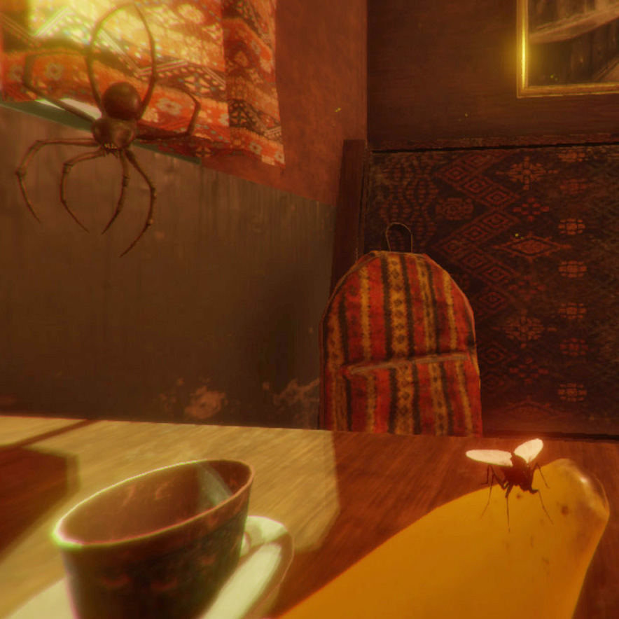

Itsy Bitsy Passengers
An online multiplayer action game featuring playable flies and spiders riding on a train travelling through Central and South Africa.
|
My name is Philipp Schofield, born 1994, and I am a Master's graduate in Mathematics and Computer Science from Germany. The purpose of this portfolio is the presentation of the projects I have worked on, and the skills I have acquired over the years. Envisioning, studying and realizing. This is what I stand for. And together with like-minded people phenomenal things emerge. Thus, as a passionate, both Software Engineer and Video Game Developer, I am looking to offer my skills to an innovative company, one which is comprised of like-minded people, one which keeps on challenging me, one which I can proudly stand beside. If you believe that you and I are the perfect fit, contact me. |
|
Due to my Mathematics background I have a keen eye for detail when problem solving. I am able to dissect a problem, however complex it might be, into smaller pieces and solve it step by step in an efficient and effective manner. Complex problems can be very frustrating but my background has taught me the courage to tackle and the patience to solve such problems. |
|
Being exposed to programming for over 10 years, supplies me with valuable experience. I have worked with many different programming languages such as, but not limited to, C++, C# and Java. During my studies in Mathematics, I additionally studied Computer Science which supplies me with a solid theoretical and practical background. |
|
During my studies I have found a passion for Video Game Development, which came natural to me, as I've grown up with a deep fondness for video games. I have been a major part of a handful of game projects in Unity Engine, and have been experimenting with the engine ever since. In the process of making a particular game, I was facing a problem, where I wanted a playable spider to move more realistically, which lead me to building a procedurally animated spider from scratch. For this I had to do a lot of research, e.g. in inverse kinematics. And after a lot of different design approaches, I ultimately found a system I was satisfied with. This project is featured below. |
A Unity Engine project of a completely procedurally animated spider. The spider uses inverse kinematics (IK), together with a stepping system, to position its legs smartly to the surroundings. It can climb any surface (walls, corners, ceilings, you name it!) and is freely controllable by the player. All movement is procedural, that is no preset animation is used at all.
An online multiplayer action game featuring playable flies and spiders riding on a train travelling through Central and South Africa.
A first-person horror game in a dark and empty hospital setting featuring a terrifying roaming humanoid-like creature.
A QR-Code Scanner written in C++ using the OpenCV library. The program detects QR-Codes from image or video input. Moreover, it can generate a synthetic dataset of QR-Code images, which can then be used to test the detection.